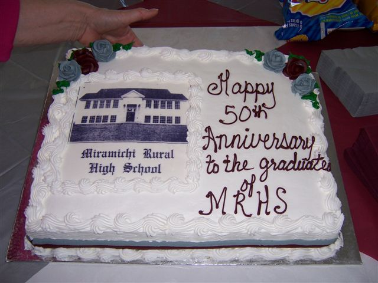
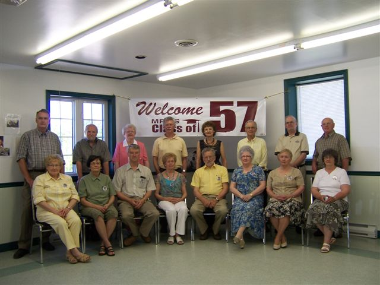

The Family Chronicle
No. 144 September 30, 2007
50 Year Reunion


Seated in the above photo from left to right are: Lola (Jenkins) Miller, Elizabeth (Williston) Belyea, William Godfrey, Sylvia (Mc Lenaghan) Brennan, Glen Russell, Blanche (Mac Donald) Fowlie, Verona (Taylor) Lloyd, and Betty (Williston) MacEwan. Absent from the photo is Joan (Gulliver) Weaver.
Congratulations to the graduating class of 1957 from the Miramichi Rural High School on their recent reunion. The reunion was held in the Father T. A. McDonald Memorial Hall, Miramichi. Those in attendance enjoyed a dinner catered by the Ladies of St. Stephen’s United Church and story telling (and retelling ! !) and exchanging information and experiences through the intervening years.
Follow -up
I was looking back at Issue 142 and the photo of the fish; the photo does not do them justice. I am sure some of those trout weighed over five pounds.
I just read another book about lumbering in the Miramichi in the early 1940’s. Some of the terms I had not heard before or for a long while included a “widow-maker” – a loose branch or treetop suspended high above the ground that could fall and strike someone unawares; a “two sled” - from the description I would say it was a set of bob sleds; “dealed up boards” - I figure are two by fours (at least we called a two-by-four a “deal”; the “devils mount” - a device used to lift the front end of a log while it was being twitched to the road.
Red Ochre
There was a shed on the west end of our barn; I do not know if it was original or Dad added it after he purchased the place. We called it the wagon shed and wagons were store at ground level; the old Model A was put on blocks and stored there during the depression. Upstairs was a workshop shop including a bench with tools used around the farm. In the shop also was stored some lumber; I remember especially the 2, 3 and 4 inch maple, birch and beech cut at the back of the farm and used for repairing sleds, wagons and other machinery.
In the shop also was a barrel of dull red oily liquid – a barrel of red ochre. Red ochre was a paint colour, probably purchased in a block or as a powder and mixed with linseed oil. In Newfoundland, they mixed the red ochre with seal oil or cod liver oil. It probably was in a metal barrel; my recollection is that it was without a top but it did have a burlap cover over it.
Red ochre in oil was a cheap form of red paint, sort of a dull red, used for farm buildings. One still sees old red barns or sheds throughout the countryside; later buildings have red doors and trim but I think that most of these are paint. In all the years it sat there, I cannot ever recall the red ochre being used but I know it was there.
Early Black River
I have a copy of a map of Black River “Drawn and published from Actual Surveys by Roe & Golby” in 1876. Instead of lots, the map simply lists the names of property owners along the River. I purchased my copy from Paul Anderson, Rare books and Maps in Moncton. (1-506 859-1232; Email vintage@nbnet.nb.ca
I do not know how accurate the map is but, here are some comments:
There are three Watlings shown, a W. Watling on the north side of the River west of the Richibucto road and two J. Watlings on the south side. One would be Jubal (1821-1900) married to Christina MacNaughton; the other likely was Jubal’s son, Jubal (1846-1915) married to Grace MacDonald. The W. Watling is likely William Watling, the first Jubal’s brother married to Mary MacNaughton, a sister of Christina. I do not know which
.
The Little Branch Road on the south side of the River, shows the School, J. McDonald, J McNaughton, and G. Fowley. Alexander MacDonald, the original grantee on the land where Norman and Neil now live, was born in 1775 so was no longer living when this map was drawn. The J MacDonald could have been his son, John, or his daughter, Jessie. By 1901, the east half of the Alexander Mac Donald property was owned by John Macdonald and the western half by Jessie MacDonald. The Sinclair property, next to the Alexander MacDonald property in my day belonged to a MacNaughton.
The Mackenzie Road, starting about a mile from the Little Branch school, shows S McDonald, J Anderson, R. Robinson, J. McKenzie, Mrs. Ward and M. McDonald
The map also shows three postal areas, Black River P. O. which appears to serve Upper Black River, Black River Bridge P.O. and Little Branch P.O.
Bay du Vin Island, Fox Island, Huckleberry Island, Portage Island and another whose name I cannot read, are shown toward the entrance to the “Miramichi River and Inner Bay”.
The Family Chronicle (Copyright) is an occasional newsletter published by Don Glendenning and posted on the family website. It is intended to share information about my family, community and the times in which I grew up. While every effort is made to be accurate, errors are likely to occur. Comments, enquiries and information may be sent to 62 Queen Elizabeth Drive, Charlottetown, PEI, C1A 3A9. Tel: 902 892 5859. Email: don@glendenning.net Web: www.glendenning.net/don